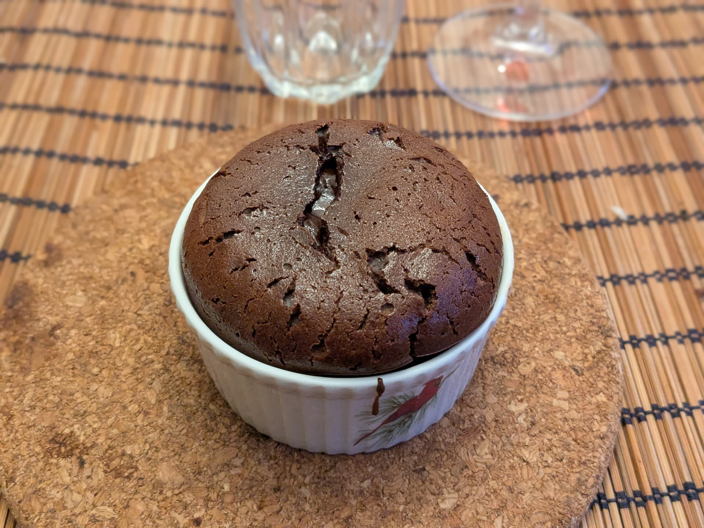

Ramequins fondants au chocolat

Pour 4 personnes :
- 160g de chocolat noir
- 35g de beurre
- 15g de farine
- 50g de sucre blanc
- 30g de sucre brun (ou bien de sucre blanc)
- Trois œufs
- Faire préchauffer le four à 210°C. Faire fondre les trois quarts (donc 120g avec les proportions données) de chocolat avec le beurre à feu doux.
- Pendant ce temps, mélanger la farine, les sucres, et les œufs à la cuillère. Ajouter le chocolat et le beurre dès que c'est fondu.
- Beurrer quatre ramequins, et les remplir environ au tiers de mélange. Disposer 10g de chocolat (deux carrés, typiquement) au centre, et recouvrir le tout du reste de mélange.
- Enfourner 12 minutes. Déguster à la sortie du four ou quelques minutes après, quand c'est encore assez chaud.